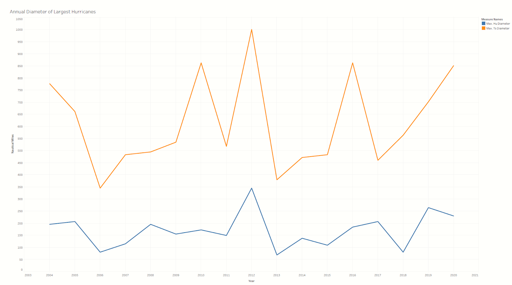
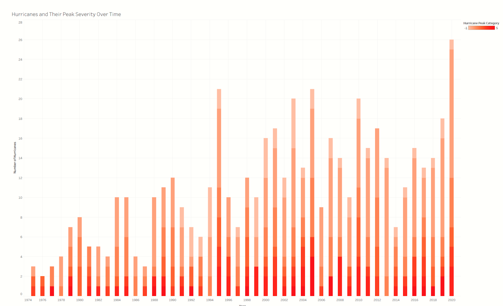

This is an visualization exercise in showcasing hurricane activity in the Atlantic over the last 5 decades. We discuss their severity, their size and their frequency of reaching land. We use a few visualization that highlight the aforementioned changes as found in our dataset. This web app allows the viewer to observe our data transformed and plotted to allowing them to follow trends and recognise patterns in hurricanes over the past half century!
The visualization below is a line graph showing the relation between Anually largest Tropical Storm and Hurricane diameters as well as their trends over the years. We can see that there is a significant swing in hurricane diameter from year to year, with particularly large hurricanes occurring every several years. There is also a weak upward trend of diameter over time, with tropical storm diameters increasing by 6 nautical miles per year and hurricane diameter increasing by 2 nautical miles per year.
Now we want to show how the severity and count of hurricanes have fared over time. As shown in the next visualization for this task – while there are more severe hurricanes over time, there are proportionally more mild storms over time, therefore the average severity is actually decreasing. The visualisation below shows the number of hurricanes for each year. The darkness of the bar indicates the peak severity reached by the hurricane.
